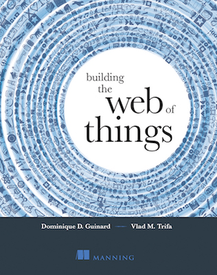
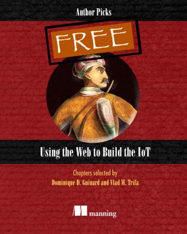

Dominique Guinard
IoT Expert
WoT Pioneer
Blockchain enthusiast
Entrepreneur
Author
About Me
IoT Expert, WoT Pioneer, Blockchain enthousiast
Co-founder & CTO @ EVRYTHNG
Dr. Dominique Guinard is the CTO and co-founder of EVRYTHNG, an IoT PaaS managing billions of connected products for big brands. He is also an Advisory Representative at W3C, faculty at the Blockchain Research Institute and a working group chair at GS1 working on IoT and product identities related standards. Before that, Dom worked for SAP taking an active role in their IoT strategy. Dom was also pioneering Web of Things research at ETH Zurich and MIT where he worked on his Ph.D. He has more than a decade of IoT experience working on projects for Oracle, the Auto-ID Labs, Nokia and SAP. Dom authored two IoT books “Building the Web of Things” and “Using the Web to Build the IoT” (Manning) as well as many scientific articles and book chapters. In 2011 and 2016, Dom was listed in the top 10 IoT thinkers by Postscapes and early in 2012, his Ph.D. on the Web of Things was granted the ETH Medal.
- ResidenceLondon, United Kingdom
- Office addressEVRYTHNG, 122 East Rd, London N1 6FB, UK
- Twitter@domguinard
- LinkedIndomguinard
- Blogwebofthings.org
- Bitcoins receiving address 1J2ckEBbaPgPvyN2ucDsMMy36umEkSW86v
Resume
12+ Years of Experience in IoT
Education
2010 - 2011
Invited Researcher
MITInvited visiting researcher working on using cloud computing and Web technologies to modernize the supply chain, RFID and IoT system for the MIT Auto-ID labs.
2007 - 2011
PhD in Computer Science
ETH ZurichPhD with a specialisation in Internet of Things technologies. PhD thesis: A Web of Things Application Architecture, granted the ETH Medal in 2012.
2005 - 2007
MSc in Computer Science
Lancaster University & University of FribourgMaster in computer science with a specialization and master thesis in Ubiquitous computing at Lancaster University.
2002 - 2005
BSc in Computer Science
University of FribourgBachelor in computer science & Entrepreneurship.
Experience
2011 - Present
Co-founder & CTO
EVRYTHNGFounder, lead architect and engineering team lead at EVRYTHNG: a PaaS for the Internet of Things managing billions of connected identities. Helped creating and growing the company from 4 to 60 people in London, New York, San Francisco, Zurich and Minsk. In particular, I built the engineering team as well as the innovation team focusing on cutting edge technologies and contributing to research projects.
2007 - 2011
Research Associate
SAPDeveloping software architectures for the Internet of Things. Integrating RFID readers, wireless sensor networks, machines and appliances with business applications such as ERPs, CRMs and manufacturing systems using Web technologies.
2008 - 2011
Research Associate in Auto-ID
Auto-ID Labs, ZurichResearch Associate for the Information Management group and the Auto-ID labs (RFID) of the ETH Zurich and the University of St-Gallen leading projects in UHF RFID, NFC, mobile and IoT projects for Nokia.
Management Skills
Innovation & Research teams
Agile Project Management (SCRUM)
Entrepreneurship
Invention & Intellectual Property
Technical Skills
IoT protocols: Zigbee, Thread, Bluetooth, LoRA, Sigfox, MQTT, CoAP, WoT
Auto-ID tech: RFID, EPC, NFC, UHF, GS1, Barcodes, IR
Web architecture: REST, HTTP, HTTP/2, WS, Web Security, Semantic Web, JSON-LD, RDFa, DNS, TCP, IP
Web programming: Javascript, Node.js, Java, HTML5
(Big) Data: SQL, NoSQL (MongoDB, Redis), Streaming, Datalake
Cloud tech: AWS, Docker, Linux
Blockchain tech: Bitcoin, Ethereum
Press & Links
Blogposts, Projects, etc.
Bylines, blogposts & articles
- Manning | Book | English
Building the Web of Things - World Economic Forum (WEF)| Blog | English
Blockchain is not a magic bullet for security. Can it be trusted? - Consumer Goods Forum (CGF) | Blog | English
One Product Identity, Many Tagging Technologies - Here is why... - ICT Journal | Magazine | French
Pourquoi les tags NFC à 5 centimes constituent un pas de géant vers l’internet des objets - All news | Blog | French
Sécurité: IoT: on ne peut pas reporter toute la responsabilité à l’utilisateur - Martech | Blog | English
"EVRYTHNG launches a blockchain-utilizing orchestration hub for consumer products" - ICT Journal | Magazine | French
Swiss Cyber Security Days: attaquer c’est facile, défendre c’est compliqué - Packaging Europe | Blog | English
The barcode becomes Internet Ready - Information Age | Blog | English
Internet of things and blockchains: help or hindrance? - O'Reilly Radar | Blog | English
Helping Things in the IoT speak the same language - TechCrunch | Blog | English
The Politics of The Internet of Things - The Grocer | Blog | English
The How the blockchain will change fmcg - Wired | Blog | English
The Internet of Things: A Growing, Rebellious Teenager - O'Reilly Hardware | Blog | English
The IoT needs a defrag - Fortune | Blog | English
Bridging Internet of Things Platforms - Wired | Magazine | English
Friending your stuff - The Economist | Webinar | English
Infromation Risk - O'Reilly | Webinar | English
Building IoT Systems with Web Standards - SMAHome | Magazine | English
Web Protocols for the IoT @ EVRYTHNG - Ad Age | Blog | English
How the IoT Will Redefine Data-Sharing and Privacy - Digital Futures | Video | English
Why the Internet of Things will be the Internet of YOU - The Guardian | Online | English
IoT and the Privacy Hurdle - Harvard Business Review
Advertising and the Internet of Things - Fast Company | Blog | English
Google & the Web of Things - IoT Journal | Blog | English
As the Internet of Things Grows, Is Privacy Possible? - Techcrunch | Blog | English
EVRYTHNG Hopes To Create The Internet Of Things - Financial Times | Newpaper | English
Chip sows seed of Apple "wearables" (quote) - WIP | Developer Blog | English
Developer Spotlight with Dom Guinard of EVRYTHNG - The Economist | Blog | English
Should board members be wearing information risk on their sleeve? - Highscalability | Blog | English
A Web of Things Application Architecture - Econsultancy | Blog | English
iBeacons: what are they and why should marketers care? - Postscapes | Blog | English
5 questions with Dominique Guinard of the Web of Things - Discover | Magazine | English
The Invisible Earth: IoT - IEEE Smart Grid | Blog | English
What the Internet of Things Will Mean for the Smart Grid - SVJ | Magazine | Français
Quand les objets nous parleront - Universitas | Magazine | Français
People, Parcours, Portaits, Souvenirs - ICT Journal | Magazine | Français
EVRYTHNG lève 7 millions de dollars - ICT Journal | Magazine | Français
Google a le potentiel de faciliter l’adoption du Web des objets - The European | Blog | Deutsch
Online mit dem Kühlschrank
{kind=link}
Links
- Talks
Most of my talks can be found on Slideshare.
- Blogs
I blog mostly on Webofthings.org and EVRYTHNG..
- Scientific publications
You can find a list of my scientific publications on Google Scholar and Webofthings.org.
Books
Books I co-authored
Building the Web of Things
Building the Web of Things is a guide to using cutting-edge web technologies to build the IoT. This step-by-step book teaches you how to use web protocols to connect real-world devices to the web, including the Semantic and Social Webs. Along the way you’ll gain vital concepts as you follow instructions for making Web of Things devices. By the end, you’ll have the practical skills you need to implement your own web-connected products and services.
Using the Web to Build the IoT
Using the Web to Build the IoT is a collection of six hand-picked chapters that introduce the key technologies and concepts for building the application layer of the IoT. Dominique D. Guinard and Vlad Trifa , authors of Building the Web of Things, selected these specific topics to give you an overview of the Web of Things architecture, along with techniques for data ingestion, searching, security, and visualization.
Contact
Get in Touch
Get in Touch
Get in touch for consulting, projects, speaking opportunities.
London, UK
Available for consulting
Office Location